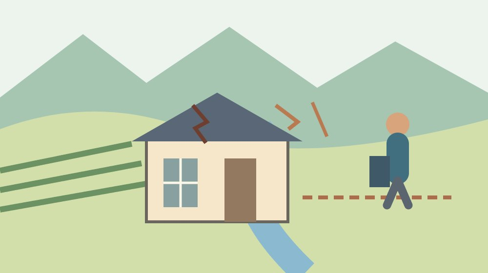
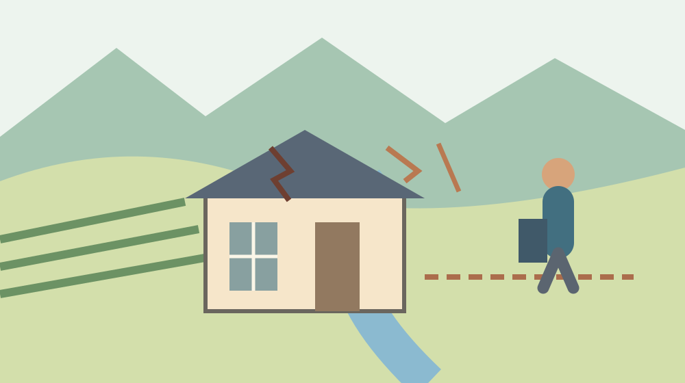
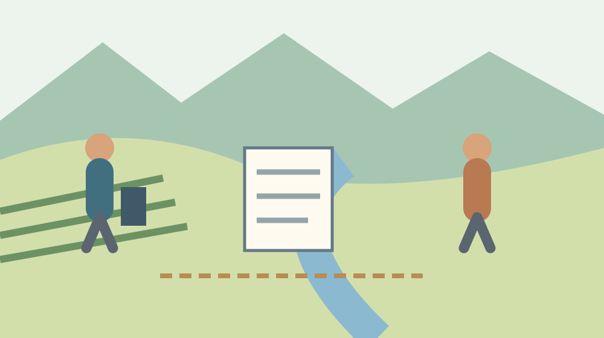

空き家の管理命令2制度｜森町の隣家で困ったら

Q. 隣の空き家が危ないとき、持ち主が不明か、管理が悪いかで手続は違う？
A. 所有者不明建物管理命令は所有者を知ることができない、または所在不明で管理が必要な場合、管理不全建物管理命令は管理が不適当で他人の権利等への侵害やおそれがある場合の手続です。個別の申立可否は専門家へ確認します。森町の住民が今日できるのは、安全な場所から危険箇所と日時を記録することです。
森町の隣の空き家が心配な方へ｜負担を言葉にする
森町で空き家の隣に住む方は、落ちそうな屋根や外壁を気にしながら暮らしています。強風の日の不安や、家族が通る場所への心配は、家の持ち主ではなく近所の側にも生じます。草やごみの確認をしてきた方の時間もあります。この記事では、近隣の負担を軽く扱わず、相談へ渡す事実を整理します。
私は大石浩之（磐田市／不動産業）です。空き家の問題を考えるとき、誰かを責める言葉より、どこにどんな危険が見えるかを先に確かめたいと考えます。所有者が分からない話と、所有者が分かっているのに管理が不適当な話は別です。二つの管理命令の違いを知ることを、今日の記録につなげます。
大阪地方裁判所第10民事部の「管理不全土地・建物管理命令申立てについてのQ&A」を、2026年10月6日に確認しました。資料の版表示は令和8年4月です。2026年に新しい制度ができたという説明ではありません。資料が示す一般的な区別を、森町で相談を始める住民向けに読み解く記事です。
大阪地方裁判所の資料は、同裁判所への申立てを前提とする説明です。森町の案件の提出先、費用、必要書類を確定する資料として使いません。申立てできる人か、命令が出るかも個別に未確認です。この記事でできるのは、二制度の入口を分け、町や専門家へ伝える内容を整えることです。
事実整理｜所有者の不明と管理の不適当を分ける
大阪地方裁判所のQ&Aは、所有者不明土地・建物管理命令について、所有者を知ることができない、または所有者の所在が分からず、管理が必要な場合の制度として区別しています。「隣の人が名前を知らない」だけで、直ちに要件を満たすとこの記事では扱いません。調査の内容と必要性は、個別に確認します。
大阪地方裁判所のQ&Aは、管理不全土地・建物管理命令について、所有者による管理が不適当で、他人の権利または法律上保護される利益が侵害されるか、そのおそれがある場合の手続と説明しています。地方裁判所へ管理命令を求める仕組みです。所有者の所在が明らかな場合でも、管理の状態が問題になり得ます。
裁判所のQ&Aは、管理されていない建物の屋根や外壁が脱落・飛散し、他人に財産上・身体上の被害を及ぼすおそれがある例を挙げています。古い家があることと、権利等への侵害やおそれがあることは同じ説明ではありません。見た目の古さだけで命令の対象だと断定せず、具体的な状態を伝える準備をします。
裁判所のQ2では、申立ては対象不動産ごとに必要とされています。私は、家とその周囲の土地をひとまとめにせず、何について相談するのかを確認することを勧めます。この記事の主題は建物です。屋根や外壁の話なのか、土地や擁壁の話なのかで、記録する対象と専門家への質問を分けます。

森町の相談との関係｜裁判所の手続と町の対応
森町の第2期森町空家等対策計画は、空き家等に関する相談への対応方針を示しています。計画の表には、相談者と相談内容に応じた対応が整理されています。近隣で困った住民が、写真や状況の記録を町へ説明するための地域の資料です。町の相談と裁判所の管理命令を、同じ手続として扱わないようにします。
森町の計画は、所有者からの維持管理相談に対し、周辺住民の生活環境に深刻な影響を及ぼさないための助言や、必要に応じた管理業者の紹介を記しています。これは計画に書かれた対応方針です。特定の隣家に、いつ、どの措置が取られるかを約束する記述としては使いません。相談した案件の確認は、その窓口に尋ねます。
私は、町へ相談すれば裁判所の命令を町が代わりに申し立ててくれる、と読み替えないことを勧めます。行政の相談先と裁判手続の相談先では、尋ねる内容が違います。今日できることは、写真、所在地、記録日をそろえて、どの窓口へ伝えるかを確認することです。自分で制度を決め打ちせず、状況を先に渡します。
町へ相談した記録も、専門家へ相談する材料になります。私は、相談日、窓口、伝えた状態、返答、未確認の項目を残す案を出します。町が調べた事実と、自分が近所から聞いた話は分けます。返答の意味が分からない場合は、何が確認済みで何がこれからなのかを尋ね、次に誰へ聞くかを整理します。
近隣の暮らしへの影響｜危険の場所と使っている道
森町で隣の空き家の屋根や外壁が心配な場合、相談には危険箇所と周囲の使い方を伝える資料が役立ちます。どの部分が、どの道や庭へ向いているかを、安全な場所から見える範囲で記録します。実際に物が落ちたのか、落ちそうに見えるのかは別に書きます。推測を出来事へ変えないための区別です。
私は、家族が通る場所を示す簡単な図を添える案を出します。玄関、通路、駐車場所、隣家の屋根の向きを記します。図は正確な測量図ではなく、相談時の説明用です。境界線が不明なら、不明と書きます。自分の図から他人の土地の範囲を確定したり、立ち入る権利があると判断したりしません。
写真を撮るために危険箇所へ近づく必要はありません。私は、近隣の方が安全を削ってまで記録を増やすことを勧めません。屋根へ上る、敷地へ入る、外壁を触って確かめることは避け、安全に見える位置から撮ります。撮れない場所は未確認として記録します。危険を感じる場合は、安全を確保して相談を先にします。
持ち主の事情を近所の噂から断定すると、相談の焦点がずれます。私は、連絡をした日時や返答があったかという事実と、管理の状態を分けることを提案します。誰が相続したらしいという話を、所有者の確定情報にしません。連絡先が分からなければ分からないと伝え、その先の確認方法を専門家に相談します。
良い点｜所有者が分かる家でも相談の余地がある
二つの管理命令の区別を知る利点は、所有者の不明と管理状態の不適当を分けて考えられることです。裁判所のQ&Aは、所有者の所在が明らかな場合にも管理不全の制度を説明しています。持ち主が分かるなら何も相談できない、と入口で諦める必要はありません。ただし、個別の要件と申立可否の判断は残ります。
私は、屋根や外壁の脱落・飛散という具体例を裁判所が示している点を評価します。住民が伝える言葉を、古い、汚い、困るという感覚から、どの部分に何のおそれがあるかへ移せます。問題を人の性格へ向けず、建物と周囲への影響を整理しやすくなります。相談資料に必要な事実を探す足場になります。
森町の計画に相談内容ごとの方針があることも、相談の入口として意味があります。私は、住民だけで法律上の分類を終えてから電話する必要はないと考えます。危険箇所と見えた状態を渡し、町で聞ける内容と専門家へ相談する内容を切り分ける。相談に慣れていない方の準備を軽くする使い方ができます。
記録は、すぐに申立てをしない選択にも役立ちます。私は、今回確認したことを残し、変化があれば同じ場所を安全に見直す案を出します。放置を勧めるのではありません。相談した後にどの変化を伝えるかが分かれば、家族や近隣が毎回説明を作り直す負担を減らせます。次の連絡の材料を持てることが利点です。
注文したい点｜制度を知ることと命令が出ることは別
空き家の管理命令を知っても、個別案件で命令が出るとは限りません。大阪地方裁判所の資料も、事案ごとの事情による判断と、同裁判所を前提にした説明であることに注意を置いています。森町の建物について、費用や必要書類をそのまま転用することはできません。制度の概要と個別の相談を分けて進めます。
私は、住民向けの案内に、町の相談と裁判手続の相談をつなぐ説明を望みます。法律の名前だけ増えると、近隣の方はどこへ電話すればよいか迷います。今日できる一歩は、町へ相談した際に「この状況で専門家へ相談するなら、何を準備すればよいか」と尋ねることです。答えが出ない項目は未確認として残します。
私は、今回の記事だけでは、住民が申立人になれるかを判断できません。どの権利や利益が関係するか、具体的な状態、必要な調査など、個別の材料が足りないためです。写真があれば必ず命令が出るという説明はしません。安全に記録をそろえ、弁護士等へ相談したうえで、選ぶ手続と費用の負担を確認します。
費用の確認では、申立てに必要な金額、専門家への依頼費、管理に関係する負担を分けて尋ねることを私は提案します。大阪の案内にある金額を森町の見積りとして掲載していません。何を依頼する費用なのか、どの段階で支払うのかを聞いてください。近隣の不安だけで、家族が負担できる範囲を飛ばして決めないようにします。

対案・結論｜今日の一歩は危険箇所と日時の記録
森町で隣家の空き家に不安がある方が今日できるのは、安全な場所から危険箇所と日時を記録することです。所在地、屋根や外壁のどの部分か、見えた状態、周囲に使っている場所を一枚にします。実際の落下と、落下のおそれを分けて書きます。所有者について知っていることも別欄に置き、未確認を明示します。
町の対応を確認する際は、森町の空き家計画を扱った記事も参照できます。私は、町の計画の内容と、自分の案件で受けた回答を混ぜないよう勧めます。相談先へ写真を送る方法、記録の追加が必要か、次の連絡先はどこかを尋ね、回答を家族のメモに残してください。
相談会の記事は、2026年の森町の空き家相談案内にあります。過去の記事の開催日を、今日受け付けている窓口の情報に読み替えないでください。利用する場合は現行の公式案内で日時と受付を確認します。緊急性のある不安を、将来の相談会まで待つ理由にはしません。
持ち主の側が家の管理や利用を考える場合は、空き家バンクの所有者向け記事も別の入口になります。私は、募集の可能性と近隣への危険の確認を同じ話にしない案を出します。使い道の検討には時間がかかっても、周囲への影響は先に相談します。近隣の不安を売却の圧力に変える必要はありません。
家族に残す記録｜見た事実と聞いた話を別にする
近隣相談の記録には、日時、所在地、見える危険箇所、写真、相談先、返答を載せます。私の提案は、直接見た事実、人から聞いた話、自分の推測を分ける三つの欄です。所有者の名前についても、何を根拠に知ったのかを残します。不明な情報を推測で埋めず、専門家に確かめる質問へ変えておきます。
同じ場所の写真を撮る場合は、安全な撮影位置と日付が分かるようにします。私は、写真を過度に加工せず原本を保管する案を勧めます。見えない部分を画像の補正で確定したように扱わないためです。送付する画像の範囲は相談先へ確認し、近隣の顔、車の番号、住居内の様子など必要のない情報は共有を避けます。
相談が複数になると、家族の中で誰がどの窓口へ連絡したかが混ざります。私は、一人の記録担当を置き、相談日と未確認項目を更新する形を提案します。責任を一人へ押し付ける意味ではありません。電話する人と記録する人を分けても構いません。返信を待っている項目が分かれば、重複する問い合わせを減らせます。
危険箇所が変わったときは、前回の記録を書き消さず、日付を付けて追記します。私は、相談した時点の状態を残すほうがよいと考えます。相談先が見た資料と、現在の状態の違いを伝えるためです。何も変わっていないと断定できない場合は、見直せていないと書きます。家族の記録は裁判上の評価を決めるものではありません。
大石の視点｜近隣の不安を、判断できる材料に戻す
森町の空き家の隣で暮らす方へ、私が勧めたいのは、危険を言葉と記録にすることです。持ち主を責める表現を増やしても、屋根の状態や使っている通路は伝わりません。町の人が既に払っている見回りと連絡の負担を認めたうえで、管理の担い手と相談の順番を具体的にする。その入口を今日の写真と日時のメモにします。
私はこう考えます。相談用の紙を広げるなら、左側に見えた屋根と外壁の状態を書き、右側に所有者について知っていることを書きます。二つの欄を分ければ、持ち主が不明なのか、管理が不適当なのかを自分の思い込みで混ぜずに済みます。これは実際にあった相談を語る場面ではありません。私が提案する準備の仕方を、一人称の意見として記しています。
私は、危険の感じ方だけでどの制度を使うか決めることに迷いがあります。法的な要件と、日々の暮らしの不安は重なる部分があっても同一ではないからです。自分で要件を断定するより、写真と記録を専門家に渡す。それなら、不安を否定せず、選ぶ手続と費用の確認へ進めます。申立てを急がせることが私の結論ではありません。
森町の家を今後も使うためには、建物の維持と近隣への配慮を続ける人が要ります。管理の負担が一人の持ち主や近所の善意に偏る状態には、相談の道が必要だと考えます。今日すべてを解決できなくても、危険箇所を安全に記録し、相談先へ渡す一歩は取れます。まだ手続を決めないご家族にも、確認済みの材料を一つ残せます。
よくある質問
持ち主が分かっている空き家でも管理命令を相談できますか？
大阪地方裁判所のQ&Aは、管理不全土地・建物管理命令を、所有者の所在が明らかでも管理が不適当な場合の制度として区別しています。他人の権利等の侵害やそのおそれなど、個別の判断が必要です。持ち主が分かるだけで相談を諦めず、建物の状態を記録して専門家へ相談してください。命令が出ることを保証する説明ではありません。
大阪のQ&Aに従って森町の家もそのまま申し立てられますか？
大阪地方裁判所の資料は同裁判所を前提にした一般説明です。森町の案件の提出先、費用、必要書類をそのまま確定する資料としては使えません。二制度の区別を理解する資料として用い、個別の手続は管轄や専門家へ確認してください。申立人になれるか、調査や資料がどこまで必要かも、この記事では判断していません。
近所の住民が最初に準備するものは何ですか？
安全な場所から見える危険箇所の写真、撮影日時、所在地、周囲の通路や庭との関係を記録します。実際に落下した事実と、落ちそうだという判断は分けます。所有者について知っていることと未確認のことも別欄にしてください。空き家へ入ったり屋根へ上ったりせず、町や専門家へ記録を渡して次の確認方法を相談します。
参考にした公式情報
- 大阪地方裁判所第10民事部：管理不全土地・建物管理命令Q&A（令和8年4月版）（2026年10月確認／確認日：2026年10月6日）
- 森町：第2期森町空家等対策計画（2026年10月確認／確認日：2026年10月6日）
- 森町：第2期森町空家等対策計画・相談への対応方針（2026年10月確認／確認日：2026年10月6日）
最終確認日：2026-10-06。制度・数値・料金は変わる場合があります。税務・登記・契約・裁判手続の個別判断は、管轄窓口、司法書士、税理士、弁護士等へ確認してください。この記事は公表情報と大石の意見を段落単位で分けています。